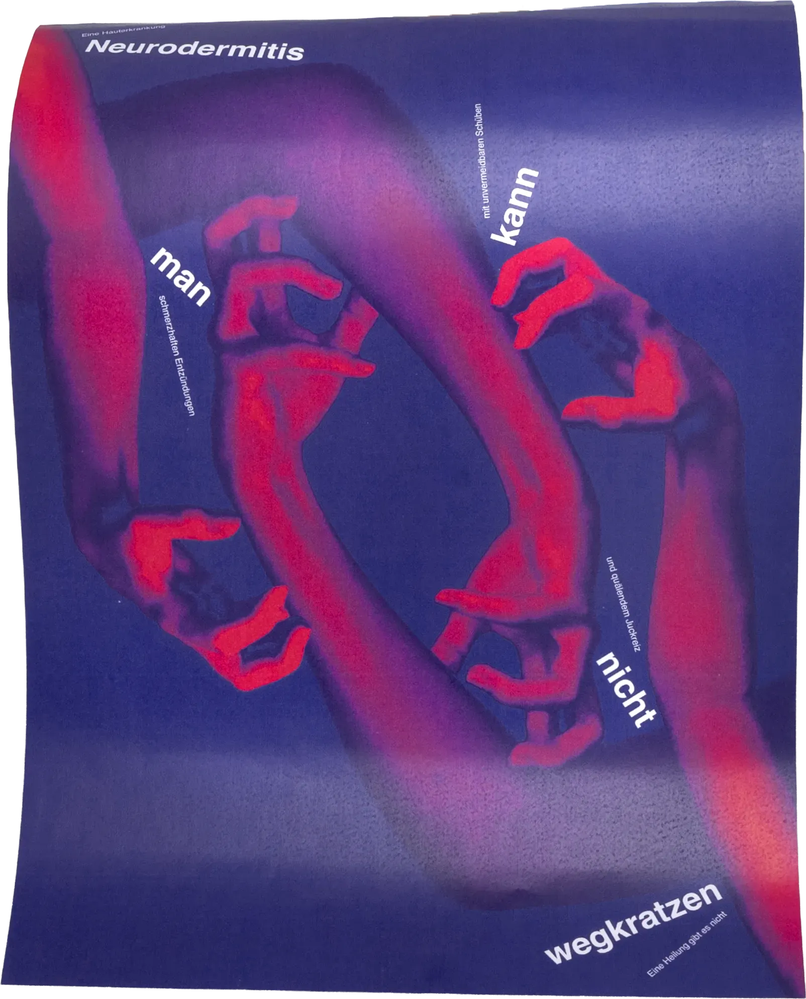

NEURODERMITIS KANN MAN NICHT WEGKRATZEN
Das Plakat richtet den Blick auf die Stigmatisierung von Neurodermitis. Es macht den inneren Kampf der Betroffenen mit der Hautkrankheit sichtbar und möchte die Gesellschaft diesbezüglich sensibilisieren. In einer eindringlichen Visualisierung zeigt sich der ständige Juckreiz als aggressiver Kreislauf und wird als körperliche wie auch psychische Belastung spürbar. Neurodermitis ist mehr als ein oberflächliches Hautproblem. Die Gesellschaft darf das Leiden nicht ignorieren, denn es lässt sich nicht einfach «wegkratzen».
